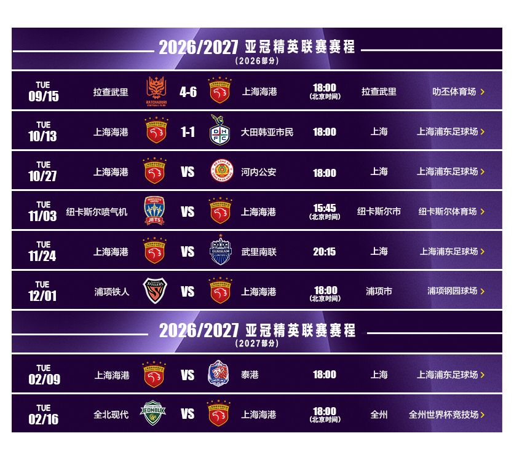
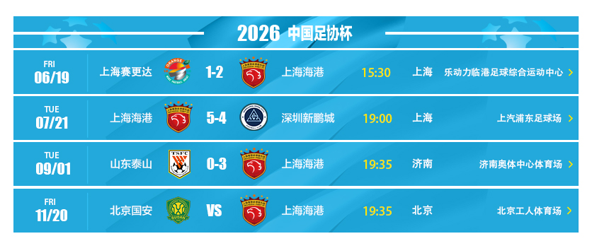

亚冠 8 场官方图更新：2026-10-24 14:00

点击图片可查看原图
| 日期 | 时间 | 对阵 | 场地 | 轮次 | 状态 |
|---|---|---|---|---|---|
| 2026-09-15 | 18:00 | 拉查武里 vs 上海海港 | 拉查武里体育场 | 联赛阶段 第1轮 | 已赛 |
| 2026-10-13 | 18:00 | 上海海港 vs 大田韩亚市民 | 上汽浦东足球场 | 联赛阶段 第2轮 | 已赛 |
| 2026-10-27 | 18:00 | 上海海港 vs 河内公安 | 上汽浦东足球场 | 联赛阶段 第3轮 | 待赛 |
| 2026-11-03 | 15:45 | 纽卡斯尔喷气机 vs 上海海港 | 纽卡斯尔体育场 | 联赛阶段 第4轮 | 待赛 |
| 2026-11-24 | 20:15 | 上海海港 vs 武里南联 | 上汽浦东足球场 | 联赛阶段 第5轮 | 待赛 |
| 2026-12-01 | 18:00 | 浦项铁人 vs 上海海港 | 浦项钢园球场 | 联赛阶段 第6轮 | 待赛 |
| 2027-02-09 | 18:00 | 上海海港 vs 泰港 | 上汽浦东足球场 | 联赛阶段 第7轮 | 待赛 |
| 2027-02-16 | 18:00 | 全北现代汽车 vs 上海海港 | 全州世界杯体育场 | 联赛阶段 第8轮 | 待赛 |
足协杯 4 场官方图更新：2026-10-24 14:00

点击图片可查看原图
| 日期 | 时间 | 对阵 | 场地 | 轮次 | 状态 |
|---|---|---|---|---|---|
| 2026-06-19 | 15:30 | 上海赛更达 vs 上海海港 | 乐动力临港足球综合运动中心 | 第4轮 | 已赛 |
| 2026-07-21 | 19:00 | 上海海港 vs 深圳新鹏城 | 上汽浦东足球场 | 第5轮 | 已赛 |
| 2026-09-01 | 19:35 | 山东泰山 vs 上海海港 | 济南奥体中心体育场 | 第6轮 | 已赛 |
| 2026-11-20 | 19:35 | 北京国安 vs 上海海港 | 北京工人体育场 | 半决赛 | 待赛 |